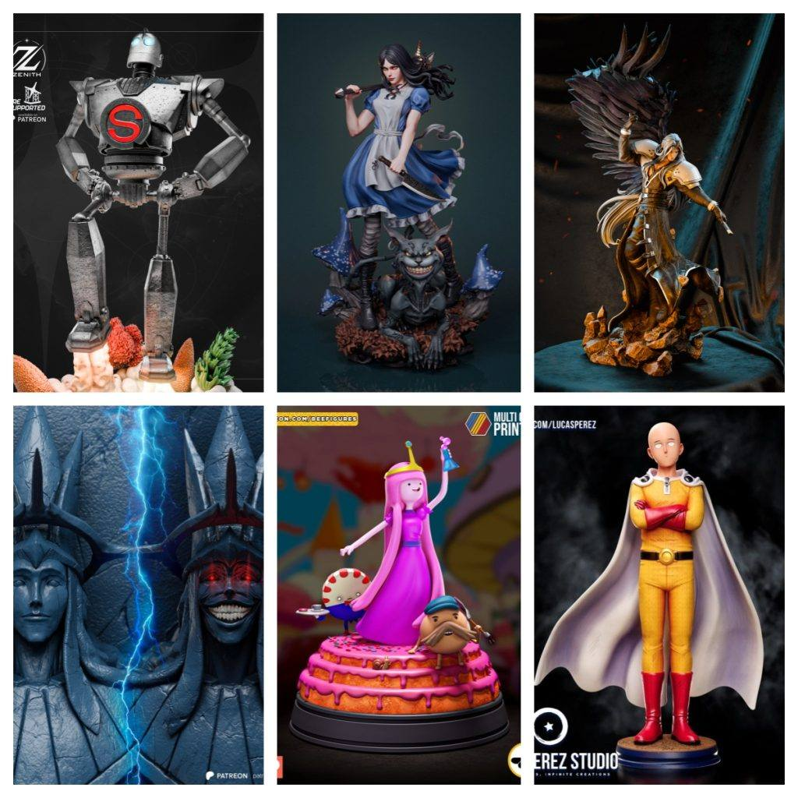

模型分享
2025年12月06日STl图纸文件分享

各位收藏家与创作者，欢迎来到本次的幻想陈列室。这里的每一尊雕像都代表着一个世界的极致符号：绝对的暴力、至高的神性、甜蜜的统治、崩坏的童话、温柔的巨人与宿命的优雅。准备好迎接这场视觉与想象力的盛宴了吗？
模型精选与导读：
- 1. 埼玉 – 《一拳超人》
- 简介： 打破力量体系天花板的“光头披风侠”。这款模型无需繁复的动态，其精髓在于精准捕捉埼玉那副标志性的“兴趣使然”的呆然表情与松弛姿态。无论是提着购物袋的日常造型，还是打出“认真一拳”前毫不起眼的起手式，都能以极简的形式传达出无敌的喜剧与震撼。
- 2. 我独自升级——神明雕像
- 简介： 源自现象级作品《我独自升级》的终极存在。这尊神明雕像绝非凡物，它很可能呈现为系统本源的宏伟化身，或是主角最终形态的升华。设计将充满威严、秩序与冰冷的非人感，是统治整个作品世界观的力量凝结，极具神圣与压迫性的收藏价值。
- 3. 泡泡糖公主 – 《探险活宝》
- 简介： 糖果王国的科学统治者与公主。模型完美融合了她甜美可爱的粉色公主裙外观与内在睿智、果决的领袖气质。可能手持科学仪器或优雅地站立，在卡通化的造型下，细节处充满精巧的糖果王国元素，是古怪与理性的奇妙结合体。
- 4. Abe3D – 爱丽丝
- 简介： 这绝非童话中的少女。Abe3D以其独特的暗黑风格重构了爱丽丝·利德尔。模型可能呈现维多利亚哥特式的装扮，手持利刃或诡异玩偶，眼神中充满崩坏与危险的气息，将经典的童话角色解构为一个充满张力与故事性的惊悚美学作品。
- 5. Zenith Studios – 钢铁巨人
- 简介： 来自经典动画的温柔守护者。Zenith Studios以其扎实的机械结构塑造能力，重现了这个庞大、笨拙又充满人性的机器人。模型可能定格于它竖起大拇指或俯身与小男孩互动的经典瞬间，厚重的机械质感与温暖的情感内核形成动人对比。
- 6. CA3D – 萨菲罗斯
- 简介： 游戏史上最具魅力的反派之一。CA3D出品的萨菲罗斯，必将极致还原其修长身姿、银色长发与标志性的超长太刀“正宗”。无论是冷漠俯视众生的站立姿态，还是施展“八刀一闪”的凌厉瞬间，都完美诠释了何为“片翼天使”的优雅与毁灭之美。
打印与后处理指南：
- 极简与极繁： “埼玉”模型重在光滑表面的完美打印，而“神明雕像”与“萨菲罗斯”则需要应对复杂的长发、衣袍或能量特效的支撑挑战。
- 色彩哲学： “泡泡糖公主”需要明亮纯正的粉色，“爱丽丝”则适合对比强烈的黑、白、血红配色，而“钢铁巨人”可通过锈蚀和战损涂装增加故事感。
- 气势营造： “神明雕像”可通过在底座添加LED灯带，营造神圣或混沌的光晕效果，极大增强氛围。
愿这组从绝对力量到复杂人性的角色，能成为您收藏中闪耀的星辰。
Happy Printing & Painting！
链接: https://pan.baidu.com/s/1UkVBqNk9d_TK0Vp1FKzxNg?pwd=u6hk 提取码: u6hk